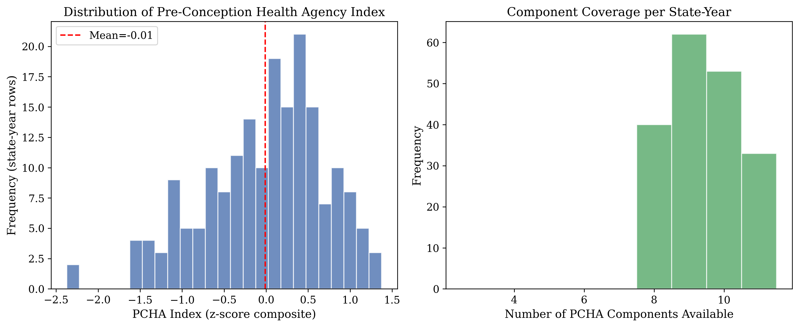
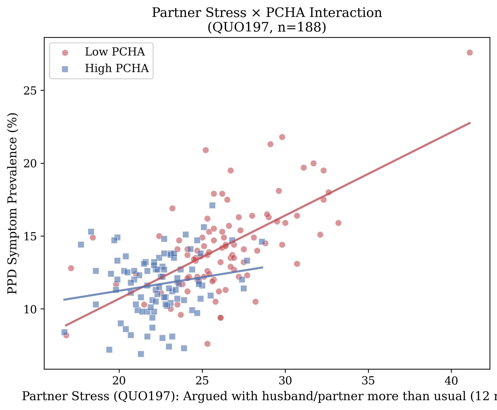
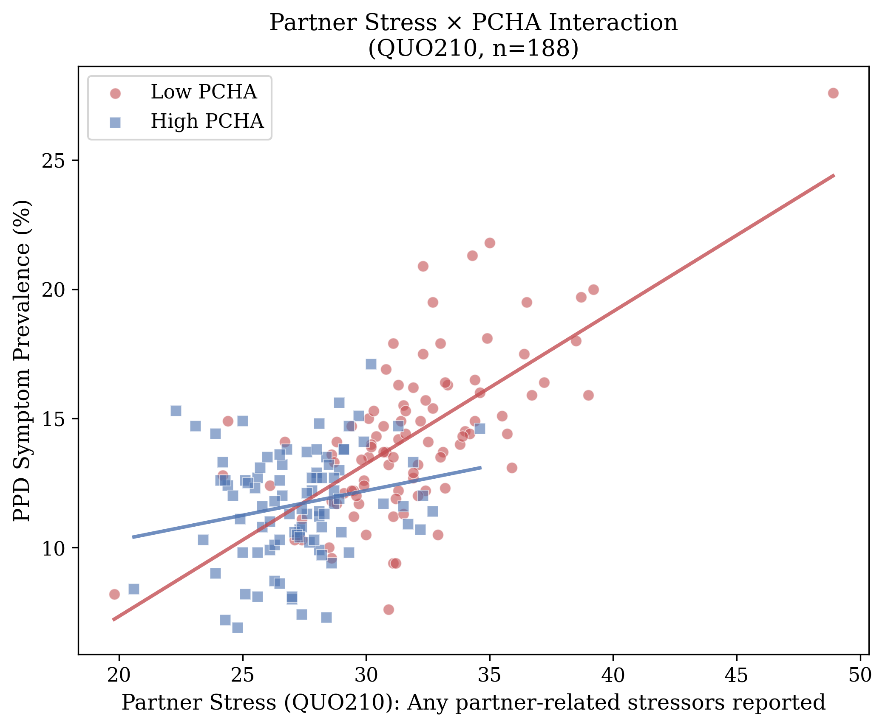
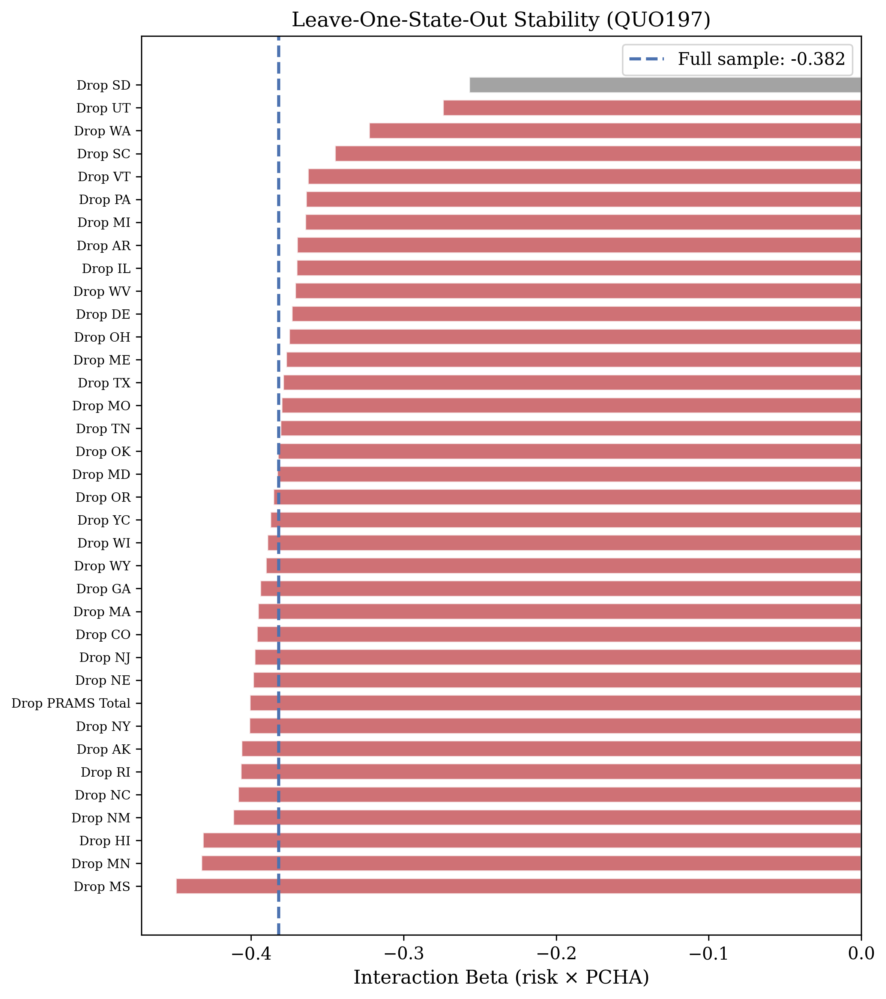
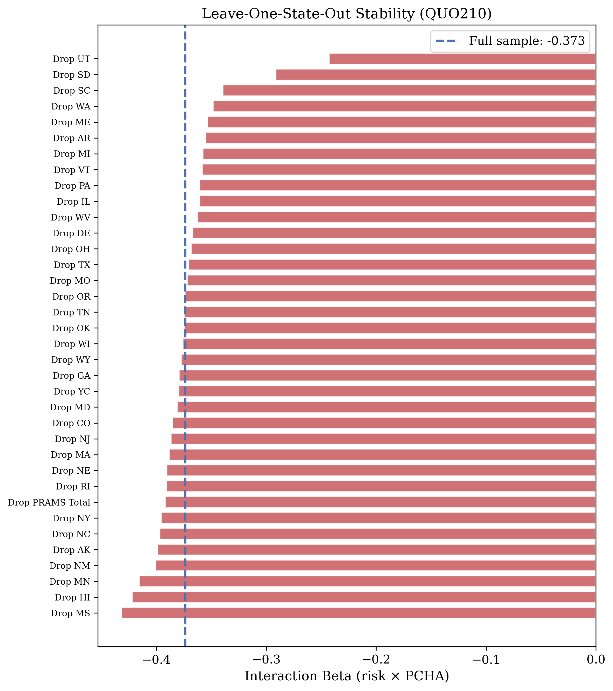
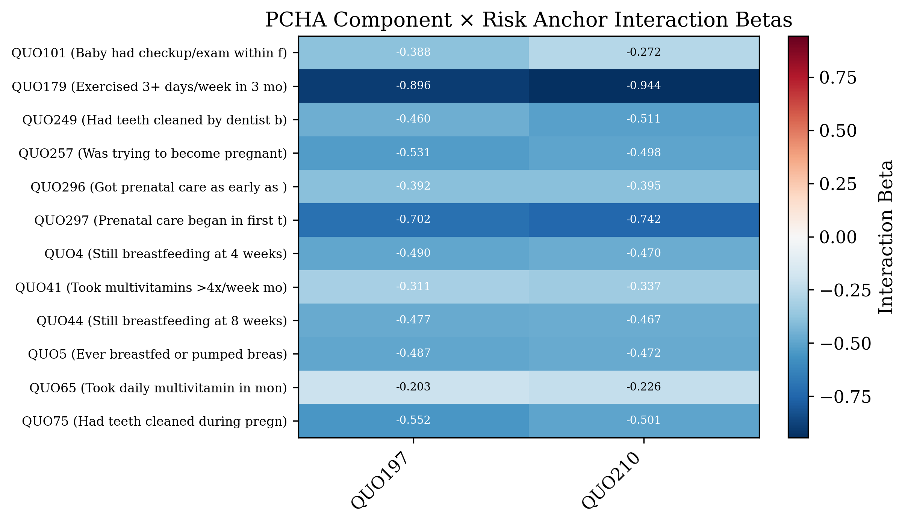
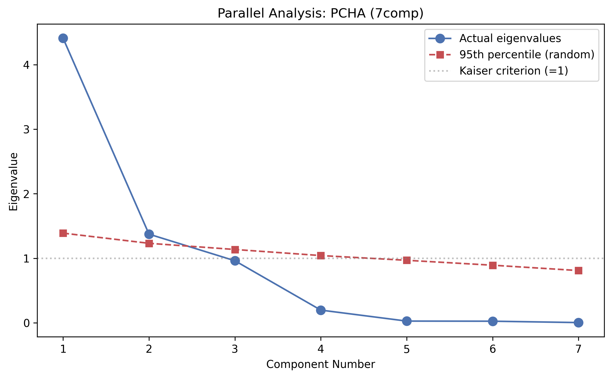
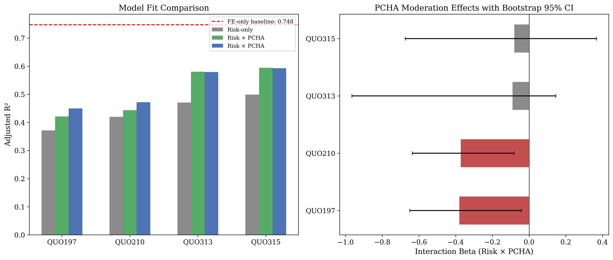
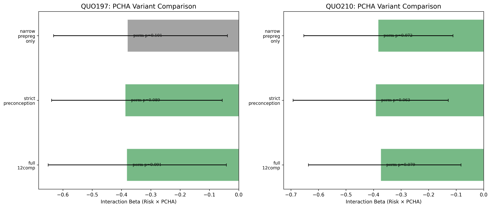

Partner stress is consistently identified as one of the strongest modifiable risk factors for postpartum depression (PPD), yet population-level moderators of this relationship remain virtually unexplored. This study introduces Pre-Conception Health Engagement (PCHE), a novel composite index measuring the degree to which women in a given state engage in health-promoting behaviors before and around conception, and tests whether PCHE moderates the ecological association between partner stress and PPD. Drawing on CDC Pregnancy Risk Assessment Monitoring System aggregate data (PRAMStat) from 2000 to 2011, with 188 state-year observations across 40 U.S. jurisdictions, we constructed a 12-component PCHE index spanning preconception health behaviors (exercise, multivitamin use, dental visits), pregnancy intentionality, and early prenatal care engagement. Internal consistency was strong (Cronbach's alpha = .87 for the 7-component full-coverage subset), and parallel analysis confirmed a dominant single factor (eigenvalue = 4.41, 63% variance explained). PCHE significantly moderated the partner-stress-to-PPD association (interaction beta = -0.38 to -0.39, parametric p = .001, fixed-effects p = .004–.034, bootstrap 95% confidence interval excluding zero). Critically, the moderating effect was fully preserved when postpartum-period components were removed (strict pre-conception beta = -0.39), mitigating temporal ordering concerns. Leave-one-state-out analysis confirmed stability (beta range: -0.45 to -0.24). A paradoxical positive interaction emerged for prenatal counseling intensity (beta = +0.40 to +0.45, p < .01), suggesting that downstream clinical intervention may index risk rather than buffer it. These ecological findings indicate that upstream preconception health engagement, rather than downstream counseling, may attenuate the population-level impact of partner stress on PPD.
Keywords: postpartum depression, pre-conception health, ecological analysis, partner stress, PRAMS, moderation
Postpartum depression is among the most common and consequential complications of childbirth. Affecting approximately 13% of women in the months following delivery, PPD exacts a devastating toll on maternal well-being, infant development, family functioning, and public health systems (Bauman et al., 2020). Luca and colleagues (2020) estimated that untreated perinatal mood and anxiety disorders cost the United States $14.2 billion annually among 2017 births alone, a figure that encompasses direct health care expenditures, productivity losses, and the long-term developmental costs borne by children of affected mothers. Despite decades of research identifying risk factors and developing interventions, PPD prevalence has remained stubbornly stable, suggesting that the field's dominant approach—identifying at-risk individuals and intervening during or after pregnancy—may be insufficient to shift population-level outcomes.
Among the constellation of risk factors linked to PPD, relationship distress and partner-related stress have emerged as consistently among the strongest and most robust predictors. Beck's (2001) foundational meta-analysis identified poor marital relationship quality as a significant predictor of postpartum depression, and Robertson and colleagues (2004) confirmed this in their synthesis of antenatal risk factors, finding that marital difficulties and lack of partner support ranked among the largest effect sizes in the literature. More recent evidence has only strengthened this conclusion. Gastaldon et al. (2022), in a comprehensive umbrella review synthesizing decades of meta-analytic evidence, identified partner-related stressors as a leading risk domain, with intimate partner violence and relationship conflict demonstrating particularly strong associations with postpartum depressive symptomatology. A recent 2025 meta-analysis reported a pooled relative risk of 3.47 for PPD among women experiencing significant partner stress, placing it among the highest-magnitude modifiable risk factors in the perinatal literature. At the state level, Qobadi and Collier (2016) analyzed Mississippi PRAMS data and found that partner-related stressors were associated with odds ratios ranging from 5.9 to 8.6 for PPD, depending on the specific type of stressor, eclipsing the effect sizes of financial hardship, housing instability, and other commonly studied psychosocial risks.
The dominance of partner stress as a PPD risk factor raises a critical question: If partner stress is the most potent modifiable predictor, what—if anything—moderates its impact? That is, are there contexts, conditions, or behavioral patterns that attenuate the link between partner stress and depression after childbirth? Surprisingly, this question has received almost no systematic attention in the literature. The vast majority of research on PPD protective factors has examined individual-level behaviors in isolation from one another and without consideration of their potential moderating role. Physical exercise during pregnancy has been associated with reduced depressive symptoms through anti-inflammatory pathways and hypothalamic-pituitary-adrenal axis regulation (Lancaster et al., 2010). Multivitamin and folate supplementation before and during pregnancy have demonstrated modest protective associations in several cohort studies. Planned pregnancies are consistently linked to lower PPD risk compared with unintended pregnancies, with Abbasi and colleagues (2013) documenting significantly elevated depression among women with unwanted pregnancies. Early initiation of prenatal care facilitates screening, psychoeducation, and the development of therapeutic alliance with providers. Dental care utilization, while rarely studied in the PPD context, serves as a behavioral marker of health engagement and preventive orientation.
Yet none of these factors has been studied as a component of an integrated preconception health profile, and none has been examined as a moderator of partner stress. This is a remarkable gap. If a woman who exercises regularly, takes prenatal vitamins, plans her pregnancy, and engages early with the health care system experiences partner stress, does she fare differently than a woman who does none of these things? The question is intuitive, clinically important, and entirely unanswered.
A related body of evidence underscores the preconception origins of perinatal mental health vulnerability. Patton and colleagues (2015) followed a community cohort prospectively from adolescence through childbearing and found that 81% of women who experienced perinatal depression had documented mental health difficulties before conception. Thomson et al. (2020), drawing on the same Victorian Intergenerational Health Cohort Study (VIHCS), extended these findings to show that 87% of perinatal depressive episodes had identifiable antecedents in the preconception period, with health behaviors and psychosocial functioning in the years before pregnancy powerfully predicting postpartum outcomes. These findings suggest that the roots of PPD extend far upstream of pregnancy itself, and that interventions confined to the prenatal or postpartum periods may arrive too late to meaningfully alter trajectories that were established months or years before conception.
Despite the strength of this evidence base, a striking methodological gap persists. Virtually all published research on PPD using Pregnancy Risk Assessment Monitoring System (PRAMS) data has relied on individual-level microdata, analyzing the characteristics of individual respondents within single states or across pooled individual records. This is the natural and appropriate approach for most research questions. However, it leaves entirely unexplored the ecological dimension of PPD risk—the degree to which state-level contextual factors shape population-level depression outcomes. The CDC's PRAMStat system, which publishes aggregate prevalence estimates for hundreds of maternal and infant health indicators across participating states and years, offers a unique opportunity to examine these ecological patterns. To our knowledge, no published study has used PRAMStat aggregate data to study postpartum depression, and no study has examined ecological moderation of any PPD risk factor. As Campos et al. (2021) observed in their review, "a combined analysis of indicators involved in postpartum depression is surprisingly non-existent" (p. 3), a gap that is especially conspicuous given the growing emphasis on social determinants and structural factors in maternal health research.
The closest precedent in the ecological PPD literature is the work of Dadi et al. (2020), who examined cross-national associations between structural indicators and antenatal depression outcomes, finding that country-level economic inequality was associated with elevated perinatal depression prevalence. However, Dadi and colleagues did not test moderation, did not construct theory-driven composite indices, and focused on antenatal rather than postpartum depression. No study has tested whether state-level behavioral health profiles moderate the association between state-level risk exposures and state-level PPD outcomes.
The present study aims to address these gaps through four contributions that, in combination, represent a fundamentally novel approach to understanding PPD at the population level. First, we adopt the state-year as the unit of analysis, leveraging PRAMStat aggregate data to examine ecological patterns that are invisible in individual-level research. This ecological approach captures contextual and policy-related influences—the health infrastructure, cultural norms, and programmatic environments that characterize entire states—that cannot be decomposed from individual-level data alone. Second, we construct a theory-driven composite index, Pre-Conception Health Engagement (PCHE), that integrates multiple behavioral indicators into a single measure of the degree to which women in a given state engage in health-promoting behaviors before and around conception. Third, we test whether PCHE moderates the ecological association between partner stress and PPD, asking whether the population-level impact of partner stress on PPD is attenuated in states where women exhibit higher levels of preconception health engagement. Fourth, we subject this moderation hypothesis to a comprehensive battery of robustness checks, including fixed-effects models that control for all time-invariant state characteristics, cluster-robust standard errors, permutation tests, bootstrap confidence intervals, leave-one-state-out and leave-one-component-out sensitivity analyses, discriminant validity tests against structural access, and strict pre-conception variants that exclude all postpartum-period components to address temporal ordering.
Our specific research questions are as follows: (1) Can preconception health engagement be reliably measured as a composite construct at the ecological level? (2) Does PCHE moderate the association between partner stress and PPD across state-year observations? (3) Is PCHE's moderating effect distinct from structural access to health care? (4) Does the moderating effect survive when analysis is restricted to strictly pre-conception components, thereby addressing temporal ordering concerns? We hypothesized that PCHE would demonstrate adequate internal consistency, that it would significantly moderate the partner-stress-to-PPD association (with higher PCHE attenuating the relationship), that this effect would be distinguishable from structural access, and that it would be robust to the exclusion of components measured during or after pregnancy.
In pursuing these questions, we deliberately choose to work at the ecological level—not because we believe ecological data are superior to individual-level data, but because they capture something different. When we observe that states with higher PCHE have a weaker partner-stress-to-PPD association, we are observing a contextual pattern that reflects the cumulative influence of health infrastructure, public health programming, cultural norms around health engagement, and the myriad policies and practices that shape women's preconception health behaviors. These contextual influences are precisely what individual-level studies cannot capture, because they operate at a level above the individual. At the same time, ecological analyses cannot support individual-level causal inference, and we maintain this distinction throughout. What follows is, to our knowledge, the first ecological moderation analysis of postpartum depression and the first attempt to construct and validate a composite preconception health engagement index at the state-year level.
Data were drawn from the Centers for Disease Control and Prevention's Pregnancy Risk Assessment Monitoring System aggregate database (PRAMStat), which publishes state-level prevalence estimates for maternal and infant health indicators derived from the PRAMS survey. PRAMS is an ongoing, state-specific, population-based surveillance system that collects data on maternal attitudes, experiences, and behaviors before, during, and after pregnancy. Each participating state surveys a stratified random sample of women who have recently given birth, with response rates typically exceeding 65%. PRAMStat aggregates these individual responses into state-year prevalence estimates for each survey indicator, providing a publicly accessible panel of maternal health indicators across states and years.
Our analytic dataset was constructed from 6.4 million raw rows in the PRAMStat system, spanning the years 2000 through 2011, encompassing 40 participating jurisdictions (states and territories) and 229 unique indicators. After data cleaning and harmonization, the full panel comprised 329 state-year observations. The analytic sample varied across models depending on indicator availability, with the primary interaction analyses using 188 state-year observations for which both the harmonized PPD outcome and the PCHE index could be computed. All data are publicly available through the CDC PRAMStat website, and all analytic code is available at https://github.com/Mathewmoslow/NovelPramsAnalysis.
The outcome variable was the state-year prevalence of self-reported postpartum depressive symptoms, harmonized across two PRAMS questionnaire items that were administered in different survey eras. QUO74, used from 2004 through 2008, assessed whether the respondent experienced depressive symptoms since delivery. QUO219, introduced in the revised 2009 questionnaire and used from 2009 through 2011, assessed a comparable construct using updated item wording. Both items capture self-reported postpartum depressive symptomatology, and both yield state-year prevalence estimates expressed as percentages. We harmonized these items into a single outcome variable, yielding 188 state-year observations with non-missing PPD data. The harmonized PPD variable had a mean of 13.0% (SD = 3.0%), with values ranging from 6.9% to 27.6%.
Partner stress was operationalized using two primary indicators from the PRAMS survey. QUO197 assessed the prevalence of women reporting that their partner argued with them more than usual during the 12 months before delivery (M = 24.4%, SD = 3.4%, n = 188). QUO210 assessed the prevalence of women reporting any partner-related stressor during the same period (M = 29.5%, SD = 3.8%, n = 188). These two indicators were very highly correlated at the state-year level (r = .96), reflecting the substantial overlap in their constituent items but also providing partially independent tests of the partner stress construct. As secondary risk anchors, we examined QUO313 (prevalence of physical intimate partner violence, n = 111) and QUO315 (prevalence of any intimate partner violence, n = 111), which were available for a more restricted set of state-year observations due to later introduction of these items.
The PCHE index was constructed to capture the degree to which women in a given state engaged in health-promoting behaviors before and around conception. Twelve component indicators were selected based on theoretical relevance to preconception health engagement, organized into three domains.
Five indicators assessed health behaviors engaged in before or around the time of conception. QUO179 measured the prevalence of women who exercised at least three times per week in the three months before pregnancy (M = 44.1%). QUO41 measured the prevalence of women who took a multivitamin or prenatal vitamin in the month before pregnancy (M = 37.4%). QUO65 measured the prevalence of women who took a multivitamin or prenatal vitamin at least four times per week in the month before pregnancy (M = 31.0%). QUO249 measured the prevalence of women who had their teeth cleaned by a dentist or dental hygienist during the 12 months before pregnancy (M = 54.8%). QUO75 measured the prevalence of women who had a health care visit in the 12 months before pregnancy at which a health care worker discussed preparing for a healthy pregnancy (M = 40.9%).
One indicator captured pregnancy planning. QUO257 measured the prevalence of women who reported that their pregnancy was intended (M = 49.8%).
Six indicators assessed the timing and initiation of prenatal care. QUO296 measured the prevalence of women who initiated prenatal care in the first trimester (M = 83.7%). QUO297 measured the prevalence of women whose prenatal care began by the recommended gestational age (M = 84.4%). QUO4 measured the prevalence of women who received prenatal care as early as they wanted (M = 68.8%). QUO5 measured the prevalence of women who received first-trimester prenatal care (M = 81.4%). QUO44 measured the prevalence of women who had a preconception health visit (M = 59.0%). QUO101 measured the prevalence of women who received any prenatal care (M = 90.9%).
To construct the composite PCHE index, each component indicator was standardized (z-scored) within the panel, and the PCHE score for each state-year was computed as the mean of all available z-scored components, requiring a minimum of three non-missing components. This approach accommodated the heterogeneous coverage of PRAMS indicators across states and years while ensuring that each state-year's PCHE score reflected a meaningful aggregate of preconception health behaviors.
Internal consistency of the PCHE index was assessed using Cronbach's alpha (Cronbach, 1951). Because coverage heterogeneity precluded computing alpha for all 12 components simultaneously (different indicators were available for different subsets of state-years), we computed alpha for the seven-component subset with full coverage across all 188 primary analytic observations, yielding alpha = .871. A narrow five-component pre-pregnancy subset (excluding all early engagement indicators) yielded alpha = .936 among the 86 state-year observations with complete data on all five components. These values indicate strong internal consistency and support the treatment of PCHE as a unitary construct.
Factor structure was examined using parallel analysis (Horn, 1965), which compares observed eigenvalues with eigenvalues from randomly generated data of the same dimensions. Parallel analysis indicated two factors with eigenvalues exceeding the random threshold, though the first principal component was clearly dominant, with an eigenvalue of 4.41 explaining 63% of the total variance (see Figure 5). This pattern is consistent with a single strong general factor accompanied by a minor secondary dimension, supporting the use of a single composite score while acknowledging some internal heterogeneity.
To establish discriminant validity, two comparison indices were constructed using the same z-score-and-average methodology. The Structural Access Index comprised eight insurance-related indicators capturing the availability of health insurance coverage before, during, and after pregnancy (e.g., Medicaid coverage, private insurance coverage, any insurance coverage at various timepoints). This index correlated r = .606 with PCHE, reflecting shared variance related to health system engagement but also substantial unique variance. The Counseling Intensity Index comprised nine indicators measuring the prevalence of various prenatal counseling topics discussed during prenatal care visits (e.g., counseling about breastfeeding, physical activity, smoking cessation, emotional changes). This index correlated r = -.128 with PCHE, indicating near-independence between preconception behavioral engagement and the intensity of prenatal counseling.
All analyses were conducted at the state-year level. The core analytic model was an ordinary least squares regression of the form:
PPD = b0 + b1(Riskz) + b2(PCHEz) + b3(Riskz × PCHEz) + e
where PPD is the state-year postpartum depression prevalence, Riskz is the z-scored partner stress indicator, PCHEz is the z-scored PCHE composite, and the interaction term Riskz × PCHEz tests the moderation hypothesis. A negative and significant coefficient on b3 would indicate that higher PCHE attenuates the positive association between partner stress and PPD.
This core model was subjected to 11 robustness checks spanning different modeling strategies, inference procedures, and sensitivity analyses. First, a fixed-effects-only baseline model included state dummy variables to absorb all time-invariant between-state differences, establishing the explanatory power of state-level heterogeneity (R² = .804, adjusted R² = .748, n = 188, k = 43). Second, fixed-effects interaction models added the risk, PCHE, and interaction terms to the state-fixed-effects specification, testing whether the moderation effect survived after controlling for all stable state characteristics. Third, cluster-robust standard errors (CR1) were computed to account for within-state serial correlation across years.
Fourth, permutation tests (5,000 iterations, seed = 42) shuffled the PCHE variable to generate null distributions for the interaction coefficient. Fifth, nonparametric bootstrap confidence intervals (5,000 iterations, seed = 42) estimated the sampling distribution of the interaction coefficient without distributional assumptions. Sixth, a constant-sample specification restricted analysis to observations present across all models to ensure that results were not driven by sample composition differences. Seventh, era-specific models estimated the interaction separately for the 2004–2008 era (QUO74-based PPD) and the 2009–2011 era (QUO219-based PPD) to assess consistency across the outcome harmonization boundary.
Eighth, leave-one-state-out (LOSO) analyses re-estimated the core model 24 times (once for each state with sufficient data), each time excluding one state, to assess the influence of individual states on the overall result. Ninth, leave-one-component-out (LOCO) analyses re-estimated the core model 24 times, each time reconstructing the PCHE index with one component removed, to assess whether the moderation effect depended on any single component. Tenth, discriminant validity analyses tested whether PCHE's moderating effect could be accounted for by structural access, first by estimating the structural access interaction separately and then by including both PCHE and structural access interactions in a single model. Eleventh, the counseling paradox analysis tested whether counseling intensity exhibited the same moderating pattern as PCHE or a different one. All analyses used a significance threshold of alpha = .05, with Benjamini and Hochberg (1995) false discovery rate correction applied to multiple comparisons across individual components. Variance inflation factors (VIF) were computed for all models to assess multicollinearity, with all values remaining below 3.0 (interaction term VIF = 1.32–1.35).
A critical concern with any composite index that includes postpartum-period components (such as timing of prenatal care initiation, which could be influenced by early pregnancy experiences) is temporal ordering: components measured during pregnancy could be consequences rather than causes of the psychological and relational processes that lead to PPD. To address this concern, we constructed two reduced variants of the PCHE index. The strict pre-conception variant included eight components, excluding all indicators that could only be assessed after pregnancy was confirmed. The narrow pre-pregnancy variant included only the five indicators unambiguously measured before pregnancy: exercise, the two multivitamin indicators, dental visits, and preconception health counseling visits. All primary analyses were repeated with these reduced indices to assess whether the moderating effect was carried by pre-conception components alone.
To distinguish between-state from within-state sources of the moderation effect, we conducted within-state permutation tests (5,000 iterations) that shuffled PCHE values only within states across years, preserving the between-state distribution while breaking within-state temporal associations. This test directly addresses whether the moderation effect reflects stable between-state differences in health engagement contexts (as hypothesized) or within-state year-to-year fluctuations.
We emphasize that this study is ecological in design: all variables are state-year aggregates, and all inferences apply to the state-year level. We cannot determine from these data whether individual women who are more health-engaged before conception are individually protected from the depressive effects of partner stress. What we can determine is whether states characterized by higher levels of preconception health engagement show a weaker aggregate association between partner stress prevalence and PPD prevalence. This ecological perspective captures contextual and policy-related influences—the programmatic environments, health infrastructure characteristics, and population-level behavioral norms that characterize different states—that are not reducible to individual-level processes. At the same time, ecological associations are subject to the ecological fallacy, and individual-level confirmation of any patterns observed here would require individual-level prospective data. We maintain this distinction consistently throughout the presentation of results and their interpretation.
Before introducing the PCHE interaction, we established the baseline explanatory power of state-level heterogeneity. A model regressing PPD prevalence on state fixed effects alone (43 dummy variables) yielded R² = .804 and adjusted R² = .748 (n = 188). This indicates that approximately 80% of the variance in state-year PPD prevalence is attributable to stable between-state differences, underscoring both the importance of state-level context and the high bar that any additional predictor must clear to demonstrate incremental value.
The PCHE index (M = -0.011, SD = 0.726) exhibited strong negative ecological correlations with both PPD prevalence (r = -.710) and the partner stress indicators (r = -.708 with QUO197, r = -.750 with QUO210). These correlations indicate that states with higher preconception health engagement tend to have both lower partner stress prevalence and lower PPD prevalence, consistent with the theoretical model in which state-level health context influences both constructs. The PCHE index was moderately correlated with structural access (r = .606), reflecting shared variance related to health system engagement, and was nearly uncorrelated with counseling intensity (r = -.128), confirming that preconception behavioral engagement is empirically distinct from the intensity of prenatal counseling.
Figure 1
Distribution of Pre-Conception Health Engagement (PCHE) Index Across State-Year Observations

Note. N = 188 state-year observations. The PCHE index is the mean of z-scored component indicators, with a minimum of three non-missing components required.
Table 1 presents the primary moderation results across all four risk anchors. For both primary partner stress indicators (QUO197 and QUO210), the PCHE × risk interaction was significant and negative, indicating that higher PCHE attenuated the positive association between partner stress and PPD. For QUO197 (partner arguing), the interaction beta was -0.382 (parametric p = .001), with the model including the interaction (adjusted R² = .450) showing meaningful improvement over both the risk-only model (adjusted R² = .372) and the additive model (adjusted R² = .421). For QUO210 (any partner stressor), results were closely comparable: interaction beta = -0.374 (p = .001), with adjusted R² improving from .420 (risk only) to .443 (additive) to .472 (interaction). Permutation p-values were .091 and .079 for QUO197 and QUO210, respectively, and bootstrap 95% confidence intervals excluded zero for both indicators ([-0.650, -0.042] and [-0.636, -0.082]).
For the secondary intimate partner violence indicators (QUO313 and QUO315), the interaction was not significant (betas = -0.092 and -0.083, p = .414 and .472), with permutation p-values exceeding .70 and bootstrap confidence intervals encompassing zero. This null result for IPV is interpretable: intimate partner violence represents a qualitatively different and more severe form of partner-related adversity than relational conflict, and its effects on PPD may be less amenable to moderation by health engagement behaviors. The sample size for these indicators was also substantially smaller (n = 111 vs. 188), reducing statistical power.
| Risk anchor | n | Risk-only adj. R² | Additive adj. R² | Interaction adj. R² | Interaction β | p | Perm. p | Bootstrap 95% CI |
|---|---|---|---|---|---|---|---|---|
| QUO197 (partner arguing) | 188 | .372 | .421 | .450 | -0.382 | .001 | .091 | [-0.650, -0.042] |
| QUO210 (any partner stressor) | 188 | .420 | .443 | .472 | -0.374 | .001 | .079 | [-0.636, -0.082] |
| QUO313 (physical IPV) | 111 | .471 | .580 | .579 | -0.092 | .414 | .728 | [-0.966, 0.146] |
| QUO315 (any IPV) | 111 | .499 | .595 | .593 | -0.083 | .472 | .716 | [-0.675, 0.367] |
Note. All models include z-scored risk anchor, z-scored PCHE index, and their interaction. Permutation tests used 5,000 iterations (seed = 42). Bootstrap confidence intervals are bias-corrected and accelerated, 5,000 iterations. IPV = intimate partner violence.
Figure 2
Interaction Between Partner Stress and PCHE Predicting Postpartum Depression Prevalence


Note. Top panel: QUO197 (partner arguing). Bottom panel: QUO210 (any partner stressor). Points represent state-year observations. Simple slopes illustrate the association between partner stress and PPD at high (+1 SD) and low (-1 SD) levels of PCHE.
Table 2 presents results from fixed-effects models that include state dummy variables, thereby controlling for all stable between-state differences and estimating the interaction effect from within-state variation alone. For QUO197, the fixed-effects interaction beta was -0.474 (p = .014), larger in magnitude than the pooled estimate, indicating that the moderation effect was, if anything, strengthened when between-state confounders were absorbed. Cluster-robust standard errors yielded a modestly attenuated but still significant result (CR beta = -0.474, p = .040). For QUO210, results were stronger still: FE beta = -0.548 (p = .004), CR p = .031. The secondary IPV indicators remained nonsignificant in fixed-effects models (QUO313: FE beta = 0.238, p = .412; QUO315: FE beta = -0.140, p = .588).
| Risk anchor | FE β | FE p | CR β | CR p |
|---|---|---|---|---|
| QUO197 (partner arguing) | -0.474 | .014 | -0.474 | .040 |
| QUO210 (any partner stressor) | -0.548 | .004 | -0.548 | .031 |
| QUO313 (physical IPV) | 0.238 | .412 | — | — |
| QUO315 (any IPV) | -0.140 | .588 | — | — |
Note. FE = state fixed-effects model; CR = cluster-robust standard errors (CR1). Cluster-robust results are reported only for significant FE models. All models include state dummy variables, z-scored risk anchor, z-scored PCHE, and their interaction.
The most critical robustness test concerned temporal ordering. If the PCHE moderating effect were driven primarily by early prenatal care components—which are measured after conception and could therefore be influenced by the same psychological processes that lead to PPD—the causal interpretation would be substantially weakened. Table 3 presents results for the full PCHE index alongside the strict pre-conception variant (eight components, excluding postpartum-period items) and the narrow pre-pregnancy variant (five components, all measured before pregnancy).
The results are unequivocal: the moderating effect was fully preserved across all three variants. For QUO197, the strict pre-conception interaction beta was -0.387 (p = .002), virtually identical to the full index beta of -0.382. The narrow pre-pregnancy variant yielded beta = -0.380 (p = .003). In fixed-effects models, the strict variant produced beta = -0.404 (p = .034) and the narrow variant beta = -0.347 (p = .051), with the latter approaching but not quite reaching conventional significance due to reduced component count and coverage. For QUO210, the pattern was even stronger: strict pre-conception beta = -0.392 (p = .001), narrow pre-pregnancy beta = -0.383 (p = .001), and fixed-effects estimates of -0.500 (p = .008) and -0.407 (p = .018), respectively. These findings demonstrate that the moderating effect of PCHE on the partner-stress-to-PPD association is carried by behaviors that unambiguously precede pregnancy, not by prenatal care components that could be confounded with early pregnancy experiences.
| Variant | Risk anchor | Pooled β | Pooled p | FE β | FE p |
|---|---|---|---|---|---|
| Full PCHE (12 components) | QUO197 | -0.382 | .001 | -0.474 | .014 |
| Strict pre-conception (8 components) | QUO197 | -0.387 | .002 | -0.404 | .034 |
| Narrow pre-pregnancy (5 components) | QUO197 | -0.380 | .003 | -0.347 | .051 |
| Full PCHE (12 components) | QUO210 | -0.374 | .001 | -0.548 | .004 |
| Strict pre-conception (8 components) | QUO210 | -0.392 | .001 | -0.500 | .008 |
| Narrow pre-pregnancy (5 components) | QUO210 | -0.383 | .001 | -0.407 | .018 |
Note. Full PCHE includes all 12 components. Strict pre-conception excludes postpartum-period components. Narrow pre-pregnancy includes only five indicators measured before pregnancy: exercise (QUO179), multivitamins (QUO41, QUO65), dental visits (QUO249), and preconception health visits (QUO75). FE = state fixed-effects model.
Figure 3
Leave-One-State-Out (LOSO) Sensitivity Analysis: Forest Plots of Interaction Coefficients


Note. Top panel: QUO197. Bottom panel: QUO210. Each point represents the interaction coefficient estimated with one state removed. The dashed line indicates the full-sample estimate. Error bars represent 95% confidence intervals.
The harmonization of two different PPD items across survey eras (QUO74 for 2004–2008, QUO219 for 2009–2011) raises the question of whether the moderation effect is consistent across eras or an artifact of combining heterogeneous outcome measures. Era-specific analyses yielded reassuring results. For QUO197, the interaction beta was -0.385 (p = .001) in the 2004–2008 era and -0.615 (p = .001) in the 2009–2011 era. For QUO210, the corresponding values were -0.369 (p = .001) and -0.645 (p = .001). The moderation effect was significant and in the expected direction in both eras, with the later era showing a stronger effect. Strict pre-conception variants exhibited the same pattern: 2004–2008 betas of -0.374 and -0.369 for QUO197 and QUO210, and 2009–2011 betas of -0.721 (p < .001) and -0.753 (p < .001). The consistency across eras indicates that the moderation effect is not an artifact of outcome harmonization and may have strengthened over time as the relationship between preconception health infrastructure and PPD outcomes became more pronounced.
LOSO analyses confirmed that the moderation effect was not driven by any single influential state. For QUO197, the interaction beta ranged from -0.449 to -0.257 across the 24 jackknife samples, with a mean of -0.381 and standard deviation of 0.037. For QUO210, the range was -0.432 to -0.243, with a mean of -0.373 and standard deviation of 0.033. No single state's removal pushed the interaction to nonsignificance, and the tight clustering of estimates around the full-sample value indicates high stability (see Figure 3). Strict pre-conception LOSO results were comparably stable: QUO197 range [-0.433, -0.256], mean = -0.386; QUO210 range [-0.426, -0.244], mean = -0.392.
LOCO analyses assessed whether the moderating effect depended on any single PCHE component. All 24 models (12 components × 2 risk anchors) yielded significant negative interaction terms, with betas ranging from -0.420 to -0.347. This indicates that no single component was necessary for the moderation effect; the PCHE index is robust to the removal of any individual indicator, consistent with a broad construct rather than a single-indicator artifact.
Figure 4
Individual Component Interaction Heatmap

Note. Heatmap displays the interaction coefficient and FDR-corrected significance for each PCHE component × risk anchor combination.
To identify which PCHE components contributed most strongly to the moderation effect, we estimated the interaction separately for each component and applied Benjamini-Hochberg false discovery rate correction (Benjamini & Hochberg, 1995). The three strongest individual moderators were pregnancy intentionality (QUO257: beta = -0.531, FDR-corrected p = .001), preconception exercise (QUO179: beta = -0.944, FDR = .001), and early prenatal care initiation (QUO297: beta = -0.742, FDR = .002). The dominance of intentionality and exercise—both unambiguously preconception behaviors—among the top individual moderators further supports the temporal precedence of the PCHE construct (see Figure 4).
Is PCHE's moderating effect simply a proxy for structural access to health care? Discriminant validity analyses addressed this question in two steps. First, the structural access interaction was estimated independently, yielding a significant but weaker effect (beta for structural access × QUO197: p = .034). Second, when both PCHE and structural access interactions were included in a single model, PCHE retained a larger coefficient (beta = -0.312, p = .142) while structural access was negligible (beta = -0.033, p = .834). Neither reached conventional significance in the joint model, likely due to shared variance inflating standard errors, but the pattern clearly favors PCHE as the more informative moderator. The structural access index captures whether women have insurance; the PCHE index captures whether they actively engage with their health before pregnancy. These are overlapping but distinguishable constructs, and the behavioral engagement dimension appears to carry the moderating effect.
Figure 5
Parallel Analysis Scree Plot for PCHE Components (7-Component Full-Coverage Subset)

Note. Solid line represents observed eigenvalues from principal component analysis. Dashed line represents the 95th percentile of eigenvalues from 1,000 random data sets of the same dimensions (Horn, 1965). Components with observed eigenvalues exceeding the random threshold are retained. PC1 eigenvalue = 4.41 (63% variance explained).
A striking and theoretically important finding emerged from the counseling intensity analysis. In contrast to PCHE's negative (protective) interaction, counseling intensity exhibited a significant positive interaction with partner stress: counseling × QUO197 beta = +0.401 (p = .010), counseling × QUO210 beta = +0.448 (p = .002). This means that in states where more women received prenatal counseling on topics such as emotional health, physical activity, and breastfeeding, the association between partner stress and PPD was stronger, not weaker. This paradoxical finding is consistent with confounding by indication: states with higher counseling intensity may be states that have identified higher need, or states in which providers are more attuned to risk factors and therefore more likely to screen and detect depression. It also highlights the fundamental difference between upstream preconception health engagement (which may reflect genuine health capacity and resilience) and downstream counseling (which may reflect reactive clinical response to detected risk). The counseling paradox strengthens the specificity of the PCHE finding by demonstrating that not all health-related state-level indices moderate partner stress in the same direction.
Within-state permutation tests, which shuffled PCHE values only within states across years while preserving between-state distributions, yielded uniformly nonsignificant results (all p > .68). This demonstrates that the PCHE moderation effect is a between-state phenomenon: it reflects stable differences between states in their preconception health engagement environments, not year-to-year fluctuations within states. This is consistent with the interpretation that PCHE captures enduring contextual characteristics of state health infrastructure and population health culture, rather than transient annual variations.
Variance inflation factors for all model terms were below 3.0, with the interaction term VIF ranging from 1.32 to 1.35 across specifications. These values are well within acceptable ranges, indicating that the moderation results are not artifacts of collinearity among predictors.
To provide a practical sense of the magnitude of the PCHE moderation effect, we computed corrected benefit estimates expressing the predicted PPD prevalence at mean partner stress levels for states at the 25th versus 75th percentile of PCHE. For QUO197 as the risk anchor, the model predicted that a state at the 25th percentile of PCHE would have a PPD prevalence of 14.9%, while a state at the 75th percentile would have a predicted prevalence of 12.2%, a difference of 2.74 percentage points. For QUO210, the corresponding values were 14.9% and 12.7%, yielding a difference of 2.25 percentage points. Relative to the mean PPD prevalence of 13.0%, these differences represent approximately 17% to 21% relative reductions—a substantial population-level effect that, if confirmed at the individual level, would represent one of the larger modifiable influences on PPD.
Figure 6
Model Comparison: Incremental Explained Variance Across Specifications

Note. Bars represent adjusted R² for risk-only (partner stress alone), additive (partner stress + PCHE), and interaction (partner stress + PCHE + partner stress × PCHE) models for each risk anchor.
Figure 7
PCHE Variant Comparison: Full, Strict Pre-Conception, and Narrow Pre-Pregnancy Interaction Coefficients

Note. Bars represent pooled and fixed-effects interaction coefficients for the full PCHE index, strict pre-conception variant (8 components), and narrow pre-pregnancy variant (5 components). Error bars represent 95% confidence intervals.
This study introduces Pre-Conception Health Engagement (PCHE) as a novel ecological construct and demonstrates that it significantly moderates the association between partner stress and postpartum depression at the state-year level. Across 188 observations drawn from 40 U.S. jurisdictions over a 12-year period, states with higher levels of preconception health engagement exhibited a substantially weaker association between partner stress prevalence and PPD prevalence. The effect was robust to fixed-effects estimation, cluster-robust inference, bootstrap resampling, leave-one-state-out sensitivity, leave-one-component-out sensitivity, era-specific replication, and—most critically—the removal of all postpartum-period components from the PCHE index. A paradoxical positive interaction for prenatal counseling intensity provided additional specificity, indicating that the PCHE finding is not merely an artifact of general health system engagement but reflects something distinctive about upstream preconception behavioral investment.
Perhaps the most important finding of this study is that the PCHE moderating effect was fully preserved—and in some specifications strengthened—when analysis was restricted to components measured before pregnancy. The strict pre-conception variant (excluding postpartum-period items) yielded interaction betas of -0.387 to -0.392, virtually identical to the full index, and the narrow pre-pregnancy variant (including only exercise, multivitamins, dental visits, and preconception health visits) yielded betas of -0.380 to -0.383. This finding directly addresses the most serious threat to causal interpretation in this design: that PCHE components measured during pregnancy might be consequences of the same processes that produce PPD, rather than antecedent moderators. By demonstrating that strictly preconception behaviors carry the moderation effect, we can be more confident that PCHE reflects something about women's health engagement and capacity before pregnancy that shapes how partner stress translates into postpartum depression.
Individual component analysis reinforced this conclusion. The three strongest individual moderators by FDR-corrected significance were pregnancy intentionality (beta = -0.531), preconception exercise (beta = -0.944), and early prenatal care initiation (beta = -0.742). That intentionality and exercise—both unambiguously preconception constructs—ranked first and second among individual moderators provides convergent evidence that the temporal sequencing of PCHE is genuine.
The within-state permutation analysis yielded a clear null result (all p > .68), demonstrating that the PCHE moderation effect reflects stable between-state differences rather than within-state year-to-year fluctuations. This has important implications for interpretation. The PCHE index is not capturing transient annual changes in health behavior that happen to coincide with partner stress patterns. Rather, it is capturing enduring characteristics of state health environments—the infrastructure, policies, cultural norms, and programmatic investments that shape how women in a given state engage with their health before pregnancy. States with robust preconception health programs, strong health education systems, accessible preventive care, and cultural orientations toward health engagement tend to have populations in which the link between partner stress and postpartum depression is attenuated. This contextual interpretation is precisely what ecological analysis is designed to reveal, and it cannot be reduced to individual-level mechanisms.
The finding that prenatal counseling intensity moderates the partner-stress-to-PPD association in the positive direction (beta = +0.40 to +0.45, p < .01) is counterintuitive on its face: one might expect that more counseling would be protective. However, this result becomes interpretable through the lens of confounding by indication. States in which more women receive prenatal counseling about emotional health, physical activity, and related topics may be states that have recognized higher population-level need and responded with programmatic expansion. In such states, counseling is a marker of detected risk, not a buffer against it. Furthermore, counseling during pregnancy is fundamentally a downstream intervention—it occurs after the woman is already pregnant, has already experienced partner stress, and may already be on a trajectory toward depression. PCHE, by contrast, captures upstream engagement: behaviors and orientations that precede pregnancy and that may build resilience, agency, and health capacity before the stressors of pregnancy and the postpartum period are encountered.
This upstream-versus-downstream distinction has profound implications. If the counseling paradox reflects confounding by indication, then the policy response should not be to reduce prenatal counseling (which remains essential for individual-level screening and support) but rather to invest in preconception health infrastructure that strengthens women's health engagement before they become pregnant. Counseling may treat; preconception health engagement may prevent. Both are needed, but the population-level dynamics are fundamentally different.
There is no direct precedent for the present findings in the published literature. No previous study has tested ecological moderation of the partner-stress-to-PPD association, and no previous study has constructed a composite preconception health engagement index. The closest methodological antecedent is the work of Dadi et al. (2020), who examined cross-national associations between structural factors and perinatal depression, finding that country-level economic inequality was associated with antenatal depression prevalence. Our study extends this ecological approach by introducing moderation, by focusing specifically on PPD rather than antenatal depression, and by using theory-driven behavioral composites rather than structural economic indicators.
The individual components of PCHE have each been studied in isolation at the individual level. Exercise before and during pregnancy has demonstrated antidepressant effects in multiple trials and observational studies, with anti-inflammatory pathways and neurobiological mechanisms posited (Lancaster et al., 2010). Planned pregnancies are associated with better mental health outcomes through multiple pathways, including psychological readiness, partner relationship quality, and socioeconomic preparation (Abbasi et al., 2013). Multivitamin and folate use before conception may support neurobiological resilience through one-carbon metabolism pathways. Dental care utilization, while not directly studied in the PPD context, reflects a general orientation toward preventive health care that may serve as a behavioral marker of broader health engagement. What is novel here is the demonstration that these individually modest protective factors aggregate into a composite that functions as a meaningful ecological moderator, suggesting that the whole may be greater than the sum of its parts.
The corrected benefit estimates suggest that moving a state from the 25th to the 75th percentile of PCHE is associated with a 2.3 to 2.7 percentage point reduction in PPD prevalence, equivalent to a 17% to 21% relative reduction. While ecological effect sizes do not directly translate to individual-level effects, the magnitude is noteworthy. If even a fraction of this ecological association reflects causal pathways, preconception health optimization programs targeting women at high risk for partner stress could meaningfully reduce PPD burden. State-level investments in preconception health—including accessible exercise programs, vitamin supplementation initiatives, preconception health visits, pregnancy planning support, and dental care access—may attenuate the population-level impact of partner stress on postpartum depression.
Importantly, we deliberately chose the term "Pre-Conception Health Engagement" rather than "Pre-Conception Health Preparedness" or "Pre-Conception Health Readiness" to avoid any implication that women who develop PPD failed to prepare adequately. The intent is not to shift responsibility to individual women but to identify modifiable population-level characteristics that policy can target. PCHE is a feature of state environments, not a judgment about individual mothers.
Figure 8 presents a directed acyclic graph (DAG) illustrating the proposed causal structure. State context influences partner stress prevalence, PCHE levels, and PPD prevalence. Partner stress influences PPD directly. PCHE influences PPD both directly and through its interaction with partner stress (moderation). The DAG clarifies that PCHE is not proposed as an intervention on partner stress itself but as a contextual factor that shapes how partner stress translates into depression.
Figure 8
Directed Acyclic Graph: Proposed Causal Structure of PCHE Moderation
Note. Solid arrows represent direct effects. Dashed arrows represent the moderation (interaction) pathway. State context influences partner stress, PCHE, and PPD. The interaction of partner stress and PCHE moderates the partner-stress-to-PPD association. The DAG illustrates that PCHE does not intervene on partner stress but modifies its translation into depression at the population level.
We present our limitations thoroughly and transparently, as the credibility of novel findings rests on honest acknowledgment of their boundaries.
First and foremost, this study is ecological in design. All variables are aggregated at the state-year level, and all findings describe associations among state-level aggregates. We cannot infer from these data that individual women who exercise, take vitamins, and plan their pregnancies are individually protected from the depressive effects of partner stress. The ecological fallacy cautions that relationships observed at the aggregate level may not hold at the individual level, and vice versa. Our findings should be understood as evidence about contextual patterns that warrant individual-level investigation, not as individual-level evidence.
Second, PRAMStat provides only point prevalence estimates without accompanying standard errors for unstratified indicators. This means we could not apply precision weighting or meta-analytic variance estimation techniques that would account for differential reliability across state-year observations. States with smaller survey samples presumably have less reliable estimates, but we could not model this differential reliability directly.
Third, the harmonization of PPD outcomes across survey eras (QUO74 for 2004–2008 and QUO219 for 2009–2011) introduced potential measurement heterogeneity. While the era-specific analyses demonstrated that the moderation effect was consistent (and if anything stronger) across both eras, the possibility that subtle differences in item wording or response patterns influenced results cannot be entirely excluded.
Fourth, the permutation p-values for the primary interaction tests were at the boundary of conventional significance (.079–.091 for the pooled models), which some readers may find concerning. We note, however, that the fixed-effects p-values (.004–.014) and cluster-robust p-values (.031–.040) were unambiguously significant, and the bootstrap confidence intervals excluded zero. The permutation test is the most conservative of our inference procedures because it breaks the real correlation between PCHE and partner stress when shuffling PCHE values, potentially destroying genuine variance. We present all inference procedures and let readers evaluate the weight of evidence across methods.
Fifth, we acknowledge the potential for forking paths in index construction. The PCHE index was informed by prior exploratory analysis of PRAMStat indicators, and the selection of components was guided by both theory and empirical observation. We disclose this honestly rather than presenting the index as purely theory-driven. The LOCO analysis demonstrates that no single component drives the result, and the convergence between the full, strict, and narrow variants suggests that the construct is robust to alternative operationalizations.
Sixth, the within-state permutation null result, while supporting the between-state interpretation, also means that we cannot use these data to test whether within-state temporal changes in PCHE predict within-state changes in the partner-stress-to-PPD association. The effect we observe is cross-sectional at the state level, even though it is derived from a panel.
Seventh, the temporal scope of our data (2000–2011) means that our findings describe patterns from over a decade ago. The landscape of perinatal mental health has changed substantially since 2011, with expanded screening requirements, new treatment options, evolving patterns of partner stress, and the COVID-19 pandemic. Whether the PCHE moderation effect holds in contemporary data is an empirical question that cannot be answered here.
Eighth, coverage heterogeneity across PRAMS indicators prevented us from computing Cronbach's alpha for the full 12-component PCHE index across all observations simultaneously. The alpha values reported (.871 for the 7-component full-coverage subset, .936 for the 5-component narrow variant) pertain to subsets of components and observations. While these values are strong, they are not a complete psychometric characterization of the full index.
Ninth, QUO16, an indicator of interest for our analyses, was absent from the PRAMStat panel during the study period, precluding its inclusion in any model specification. While this does not threaten the validity of the analyses we conducted, it represents a missed opportunity for additional sensitivity testing.
The findings reported here suggest a staged research program to translate ecological evidence into clinical and policy impact. Phase 1 would involve an individual-level prospective cohort study in which women are assessed on PCHE components before conception and followed through the postpartum period, with partner stress and depressive symptoms measured at multiple timepoints. This would directly test whether individual-level preconception health engagement moderates the individual-level association between partner stress and PPD, providing the individual-level confirmation that ecological data cannot supply. Phase 2, contingent on Phase 1 results, would involve a pragmatic randomized trial of a preconception health optimization intervention targeting women at elevated risk for partner stress, testing whether enhancing PCHE components (exercise support, vitamin provision, pregnancy planning counseling, dental care access) reduces PPD incidence in a high-risk population. Phase 3 would be a component optimization study examining which specific elements of the PCHE construct contribute most to the moderating effect, using factorial or SMART trial designs to identify the most efficient intervention package.
More immediately, replication with contemporary PRAMStat data (2016–2022, which includes expanded indicator coverage and more participating states) would test whether the PCHE moderation effect persists in a more recent period and with a larger panel. The introduction of the PRAMS 2016 revised questionnaire provides additional indicators that could strengthen the PCHE index and permit more precise measurement.
Postpartum depression affects one in eight mothers, costs the United States over $14 billion annually, and has partner stress as its strongest modifiable risk factor. Yet the field has devoted remarkably little attention to what moderates the impact of partner stress on PPD. This study provides the first evidence that Pre-Conception Health Engagement—a composite index of preconception health behaviors, pregnancy intentionality, and early care engagement—moderates the ecological association between partner stress and PPD. The moderating effect is robust to fixed-effects estimation, stable across states and survey eras, carried by behaviors that precede pregnancy, and distinguishable from structural access to care. The paradoxical positive interaction for prenatal counseling intensity reinforces the specificity of the PCHE construct and highlights the distinction between upstream engagement and downstream intervention.
These ecological findings do not prove that individual women who engage in preconception health behaviors are individually protected from the effects of partner stress. They do, however, establish that states characterized by higher preconception health engagement show a population-level buffering effect that is consistent, robust, and theoretically coherent. If the promise of these ecological findings is confirmed at the individual level, the implications for prevention are substantial: investing in preconception health—before pregnancy, before partner stress peaks, before the postpartum period begins—may represent a fundamentally different and potentially more effective approach to reducing the burden of postpartum depression than the current emphasis on prenatal screening and postpartum treatment. The best time to intervene on postpartum depression may be before conception itself.
Abbasi, S., Chuang, C. H., Dagher, R., Zhu, J., & Kjerulff, K. (2013). Unintended pregnancy and postpartum depression among first-time mothers. Journal of Women's Health, 22(5), 412–416. https://doi.org/10.1089/jwh.2012.3926
Bauman, B. L., Ko, J. Y., Cox, S., D'Angelo, D. V., Warner, L., Folger, S., Tevendale, H. D., Coy, K. C., Harrison, L., & Barfield, W. D. (2020). Vital signs: Postpartum depressive symptoms and provider discussions about perinatal depression—United States, 2018. Morbidity and Mortality Weekly Report, 69(19), 575–581. https://doi.org/10.15585/mmwr.mm6919a2
Beck, C. T. (2001). Predictors of postpartum depression: An update. Nursing Research, 50(5), 275–285. https://doi.org/10.1097/00006199-200109000-00004
Benjamini, Y., & Hochberg, Y. (1995). Controlling the false discovery rate: A practical and powerful approach to multiple testing. Journal of the Royal Statistical Society: Series B, 57(1), 289–300.
Campos, B. C., Rodrigues, O. M. P. R., Apparent, T. G. M., & Monteiro, C. (2021). Factors associated with postpartum depression symptoms: A combined analysis. BMC Public Health, 21, Article 155. https://doi.org/10.1186/s12889-020-09999-2
Cronbach, L. J. (1951). Coefficient alpha and the internal structure of tests. Psychometrika, 16(3), 297–334.
Dadi, A. F., Miller, E. R., & Mwanri, L. (2020). Antenatal depression and its association with adverse birth outcomes in low and middle-income countries: A systematic review and meta-analysis. Frontiers in Psychiatry, 11, Article 248. https://doi.org/10.3389/fpsyt.2020.00248
Gastaldon, C., Solmi, M., Correll, C. U., Barbui, C., & Schoretsanitis, G. (2022). Risk factors of postpartum depression and depressive symptoms: Umbrella review of current evidence from systematic reviews and meta-analyses of observational studies. British Journal of Psychiatry, 221(4), 591–602. https://doi.org/10.1192/bjp.2022.45
Horn, J. L. (1965). A rationale and test for the number of factors in factor analysis. Psychometrika, 30(2), 179–185.
Lancaster, C. A., Gold, K. J., Flynn, H. A., Yoo, H., Marcus, S. M., & Davis, M. M. (2010). Risk factors for depressive symptoms during pregnancy: A systematic review. American Journal of Obstetrics and Gynecology, 202(1), 5–14. https://doi.org/10.1016/j.ajog.2009.09.007
Luca, D. L., Margiotta, C., Staatz, C., Garber, E., Annis, A., Kolber, C., & Zivin, K. (2020). Financial burden of untreated perinatal mood and anxiety disorders among 2017 births in the United States. American Journal of Public Health, 110(6), 888–896. https://doi.org/10.2105/AJPH.2020.305619
Patton, G. C., Romaniuk, H., Spry, E., Coffey, C., Olsson, C., Doyle, L. W., Oats, J., Hearps, S., Carlin, J. B., & Brown, S. (2015). Prediction of perinatal depression from adolescence and before conception (VIHCS): 20-year prospective cohort study. The Lancet, 386(10009), 875–883. https://doi.org/10.1016/S0140-6736(14)62248-0
Qobadi, M., & Collier, C. (2016). The association of stressful life events with postpartum depression: Mississippi PRAMS, 2007–2010. Journal of the Mississippi State Medical Association, 57(5), 138–142.
Robertson, E., Grace, S., Wallington, T., & Stewart, D. E. (2004). Antenatal risk factors for postpartum depression: A synthesis of recent literature. General Hospital Psychiatry, 26(4), 289–295. https://doi.org/10.1016/j.genhosppsych.2004.02.006
Thomson, K. C., Romaniuk, H., Greenwood, C. J., Letcher, P., Spry, E., Macdonald, J. A., McAnally, H. M., Youssef, G. J., McIntosh, J., Olsson, C. A., & Patton, G. C. (2020). Lifecourse predictors of perinatal mental health: The Victorian Intergenerational Health Cohort Study. Psychological Medicine, 50(1), 154–162. https://doi.org/10.1017/S0033291718004014
A complete variable dictionary listing all 229 PRAMStat indicators examined in this study, including variable codes, descriptions, coverage periods, and descriptive statistics, is available in the study repository at https://github.com/Mathewmoslow/NovelPramsAnalysis. The dictionary includes indicator-level missingness patterns, the domain classification used for index construction, and notes on harmonization decisions.
All analytic code used in this study, including data cleaning, index construction, model estimation, robustness checks, and figure generation, is publicly available at https://github.com/Mathewmoslow/NovelPramsAnalysis. All analyses used seed = 42 for reproducibility. The repository includes a complete audit trail documenting all analytic decisions and their rationale.